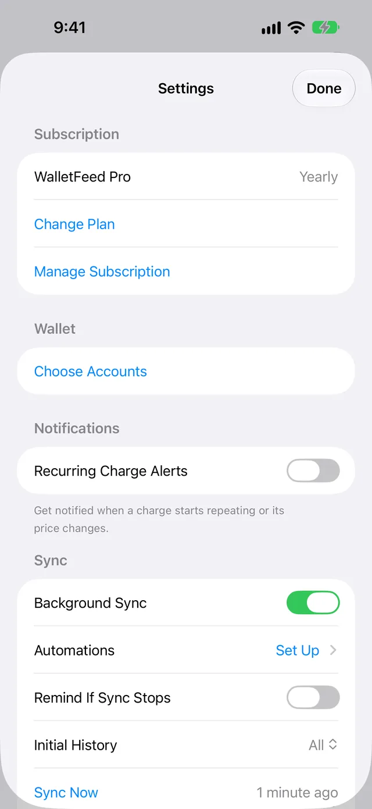

Apple Pay automation: run a shortcut after each Apple Card purchase
An Apple Pay automation in the Shortcuts app on your iPhone can send your Apple Card purchases to your WalletFeed destinations in seconds. The automation has the Transaction trigger. This trigger starts the automation only when you tap your iPhone to make a purchase with your Apple Card or Apple Cash card.
Download WalletFeed on the App Store
Online purchases and posted charges do not start the automation. For the trigger and the WalletFeed action, refer to Apple Pay automation with the Transaction trigger.
Before you start
You must have these items:
- An iPhone with iOS 26 or a newer version
- WalletFeed, with access to your Wallet accounts
- WalletFeed Pro, a subscription with a 1-week free trial, or a one-time Lifetime purchase
- One or more destinations in WalletFeed, for example Google Sheets or Lunch Money
- Your Apple Card or Apple Cash card in Wallet on your iPhone
- The Shortcuts app on your iPhone.
WalletFeed is available only in the US. You must have WalletFeed Pro to send transactions to destinations.
Step 1: Open Automations in WalletFeed
-
On your iPhone, open WalletFeed.
-
Tap Settings (the gear button) at the top of the screen.
Result: WalletFeed shows Settings.
-
If Settings does not show Sync, get WalletFeed Pro.
-
In the Sync section, tap Automations.

Result: WalletFeed shows Automations. After Each Card Tap is at the top of the screen.
Step 2: Make the automation in Shortcuts
iOS does not let apps make automations. Thus, you make the automation one time in the Shortcuts app. In After Each Card Tap, WalletFeed shows the steps for your iPhone. These steps are different for iOS 26, iOS 27 and iOS 27 with Apple Intelligence.
Do only the procedure for your iPhone. To find this procedure, look at step 1 in WalletFeed.
iOS 27 with Apple Intelligence
On iOS 27 with Apple Intelligence, Shortcuts can make a shortcut from text that you give it. WalletFeed gives you the text. In WalletFeed, step 1 is Copy Description.
-
In After Each Card Tap, tap Copy Description.

Result: WalletFeed copies the text below Copy Description and shows Copied. The text is "When I tap my Apple Card or Apple Cash card, run Sync New Purchase from WalletFeed without asking."
-
Tap Open Shortcuts.
Result: The Shortcuts app opens.
-
Tap +.
Result: Shortcuts shows a new shortcut. You can type the task that the shortcut must do.
-
Paste the text.
-
Make sure that the shortcut uses your Apple Card or Apple Cash card.
-
Tap the arrow adjacent to the trigger at the top of the shortcut.
-
Make sure that Confirm Before Run is off.
-
Tap the information button ⓘ › Privacy.
-
Make sure that Allow Running When Locked is on.
-
Tap Done.
If Shortcuts does not let you type the task or does not make the automation, do these steps:
- Open WalletFeed again.
- In After Each Card Tap, tap Set It Up Yourself.
- Below Set It Up Yourself, tap Open Shortcuts.
- Do steps 2 to 11 in iOS 27 without Apple Intelligence.
iOS 27 without Apple Intelligence
On iOS 27, an automation is a trigger at the top of a shortcut. In WalletFeed, step 1 is Open Shortcuts, and Describe It Instead is below the steps.
-
In After Each Card Tap, tap Open Shortcuts.
Result: Shortcuts opens a new shortcut.
-
Tap Add Action.
-
Type WalletFeed in the search field.
-
Tap Sync New Purchase.
-
In the action list, tap Automation › Transaction.
-
Select your cards.
-
Tap the arrow adjacent to the trigger at the top of the shortcut.
-
Set Confirm Before Run to off.
-
Tap the information button ⓘ › Privacy.
-
Set Allow Running When Locked to on.
-
Tap Done.
iOS 26
On iOS 26, automations have a tab in Shortcuts. Your other devices do not get these automations. In WalletFeed, step 1 is Open Shortcuts, and WalletFeed does not show Describe It Instead.
-
In After Each Card Tap, tap Open Shortcuts.
Result: The Shortcuts app opens.
-
Tap Automation.
-
If you have no automations, tap New Automation.
-
If you have one or more automations, tap +.
-
Tap Transaction.
-
Select your cards.
-
Select Run Immediately.
-
Tap Next.
-
Tap New Blank Automation › Add Action.
-
Type WalletFeed in the search field.
-
Tap Sync New Purchase.
-
Tap Done.
-
If you use WalletFeed on a different iPhone, do this procedure again on that iPhone.
Step 3: Make sure that the automation operates
After you tap your iPhone to make a purchase with your Apple Card or Apple Cash card, do these steps:
-
Open WalletFeed.
-
Tap Settings (the gear button) at the top of the screen.
-
In the Sync section, look at the value adjacent to Automations.
Result: Automations shows On or 1 of 2. The table below gives each value.
-
Tap Automations.
-
In After Each Card Tap, look at Last Run.
Result: Last Run shows the time of the last operation of Sync New Purchase, for example "2 hr. ago".
-
If Last Run shows Never, refer to If Last Run shows Never after a purchase.
Automations in Settings shows if each automation operated in its period. The period is the last 14 days for After Each Card Tap and the last 3 days for Every Day.
| Automations shows | Condition |
|---|---|
| On | Each automation on the Automations screen operated in its period. |
| 1 of 2 | Only one of the two automations operated in its period. |
| Set Up | No automation operated in its period, and Background Sync is off or Sample Data is on. |
| Off | After Each Card Tap did not operate in the last 14 days, Background Sync is on, and Sample Data is off. |
When Background Sync is on, the automation is not necessary. Without the automation, iOS starts WalletFeed approximately 1 hour or less after a change in Wallet.
Apple Pay automation with the Transaction trigger
On this page, an Apple Pay automation is a Shortcuts automation that has the Transaction trigger. In the Shortcuts User Guide for iOS 26, Apple tells you that this trigger starts an automation from your Wallet transactions. The trigger has one option, When I tap. You select a card, and the automation starts each time that you tap that card.
The trigger only starts the shortcut. The actions in the shortcut use the purchase. Sync New Purchase is the WalletFeed action for this trigger. This table shows the function of the trigger and the function of the action.
| Function | The Transaction trigger | The Sync New Purchase action |
|---|---|---|
| Start | The trigger starts when you tap a card that you selected. | The action starts when the trigger starts the shortcut. |
| Data about the purchase | Apple's guide does not list the data that the trigger gives to the shortcut. | The action uses no data from the trigger. WalletFeed reads the purchase from Wallet. |
| Destination of the data | The data goes to the actions that you add to the shortcut. | WalletFeed sends the purchase to your WalletFeed destinations. It uses the filter of each destination. |
| Online purchases and posted charges | These changes do not start the trigger. | WalletFeed sends these changes while WalletFeed is open, or when iOS starts WalletFeed. |
Time to send each purchase
When you tap your iPhone to make a purchase with your Apple Card or Apple Cash card, the automation starts Sync New Purchase. This WalletFeed action operates in the background. It does not open WalletFeed.
At that time, Wallet does not have the purchase. First, WalletFeed sends the changes that your destinations did not receive. Then it waits for Wallet to record the purchase. When Wallet records the purchase, WalletFeed sends the purchase to your destinations.
WalletFeed waits for the purchase until 18 seconds after the action starts. If Wallet records the purchase after that time, WalletFeed sends the purchase when it sends other changes. While WalletFeed is open, it sends each change in seconds. When WalletFeed is not open and Background Sync is on, iOS starts WalletFeed approximately 1 hour or less after a change in Wallet. Refer to Background Sync.
The automation starts only when you tap your iPhone to make a purchase. Thus, online purchases and posted charges do not start the automation. Your Savings account has no card. As a result, Savings transactions also do not start the automation. WalletFeed sends these changes while WalletFeed is open, or when iOS starts WalletFeed.
The automation does not change the data that WalletFeed sends to your destinations. WalletFeed also uses the filter of each destination. Refer to filters for destinations.
After your iPhone starts again, WalletFeed cannot send to destinations until you type your passcode one time.
When the action stops, it gives a short message. Shortcuts can show the message as a notification.
| Message | Condition |
|---|---|
| "Changes sent: 2." | WalletFeed sent 2 changes. The number is the total for all your destinations. |
| "Nothing new yet." | WalletFeed did not find a new change to send. |
| "Changes sent: 1. One destination needs attention." | WalletFeed cannot send to one destination. If two or more destinations have a problem, the message gives the number of these destinations. |
| "Sync requires WalletFeed Pro." | WalletFeed Pro is not active on this iPhone. |
| "Open WalletFeed and allow Wallet access." | WalletFeed does not have access to your Wallet accounts. |
| "Add a destination in WalletFeed first." | WalletFeed has no destination that is on. |
To correct a problem, refer to If there is a problem.
Send other changes each day
If Background Sync is off or Sample Data is on, Automations also shows Every Day. An Every Day automation starts Sync Transactions at a time that you select. This action sends new transactions and other changes to your destinations, for example online purchases and posted charges.
For Every Day, the text that you paste is "Every day at 9 PM, run Sync Transactions from WalletFeed without asking."
To make the automation, do Step 2 with these changes:
- Use the steps below Every Day in WalletFeed.
- If you paste the text, make sure that the time in Shortcuts is correct.
- Tap Sync Transactions, not Sync New Purchase.
- Tap Time of Day, not Transaction.
- Select a time, not your cards.
If Background Sync is on, iOS starts WalletFeed approximately 1 hour or less after a change in Wallet. Thus, WalletFeed does not show Every Day. An Every Day automation that you made continues to operate.
Stop or change the automation
iOS does not tell WalletFeed about your automations. To change the cards or the time, open the automation in the Shortcuts app.
To stop the automation, delete it in the Shortcuts app. After you delete it, WalletFeed sends new purchases while WalletFeed is open, or when iOS starts WalletFeed. The transactions that WalletFeed sent stay at each destination.
Other WalletFeed actions in Shortcuts
WalletFeed has more actions for the Shortcuts app. For example, Get Recent Card Transactions gives your transactions from the last 7 days to the subsequent action in a shortcut. You can change the number of days. Refer to Siri and Shortcuts.
If there is a problem
If Last Run shows Never after a purchase
The automation did not start, or it did not start the WalletFeed action.
- Open the Shortcuts app.
- If you cannot find the automation, do Step 2 again.
- Make sure that the automation uses your Apple Card or Apple Cash card.
- Make sure that the automation starts Sync New Purchase.
- On iOS 26, make sure that the automation uses Run Immediately.
- On iOS 27, make sure that Confirm Before Run is off.
- On iOS 27, make sure that Allow Running When Locked is on.
If the message is "Nothing new yet."
WalletFeed did not send the purchase before the action stopped. For example, Wallet recorded the purchase more than 18 seconds after the action started.
- If a destination has a filter, make sure that the filter includes the purchase (refer to filters for destinations).
- To send the purchase at this time, open WalletFeed.
If the message is "Sync requires WalletFeed Pro."
WalletFeed Pro is not active on this iPhone.
- Open WalletFeed.
- Tap Settings (the gear button) at the top of the screen.
- Tap WalletFeed Pro.
- If your Apple Account has a WalletFeed Pro purchase, tap Restore Purchases.
- If you do not have WalletFeed Pro, get it (refer to WalletFeed Pro).
If the message is "Open WalletFeed and allow Wallet access."
WalletFeed does not have access to your Wallet accounts.
- On your iPhone, open the Settings app.
- Tap Privacy & Security › Wallet › WalletFeed.
- Select the accounts that WalletFeed can read (refer to Wallet accounts).
- Open WalletFeed.
If the message is "Add a destination in WalletFeed first."
WalletFeed has no destination that is on.
-
Open WalletFeed.
-
Tap Destinations.
-
If a destination shows Off, do these steps:
- Tap the destination.
- Set Enabled to on.
-
If there is no destination, tap + to add a destination (refer to Destinations).
If the message includes "needs attention" or "need attention"
WalletFeed cannot send to one or more destinations.
-
Open WalletFeed.
-
Tap Destinations.
-
Find the destination with the problem. Below its name, WalletFeed shows the cause, for example "Authentication failed".

-
Tap the destination.
-
Do the steps for this cause in Troubleshooting or in the guide for the destination.
 Scan with your iPhone
Scan with your iPhone
Related
Updated November 26, 2026